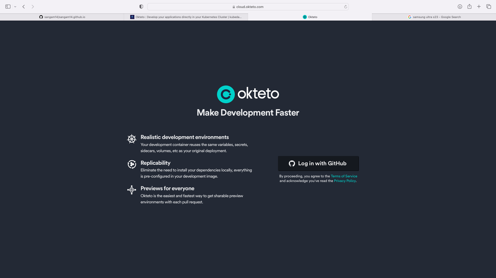
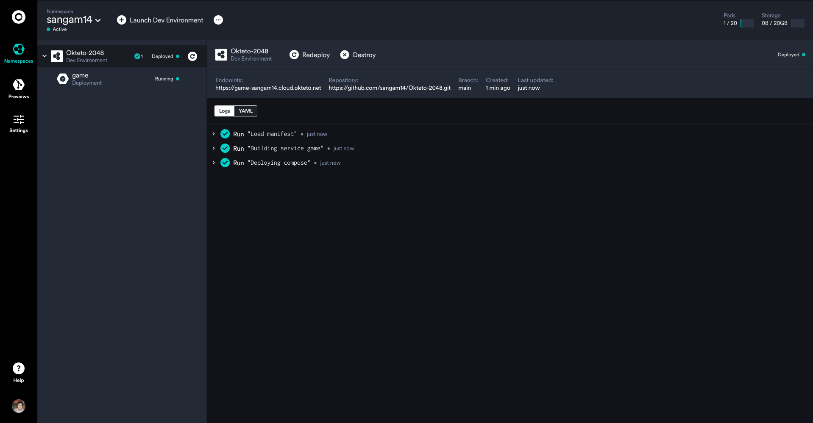
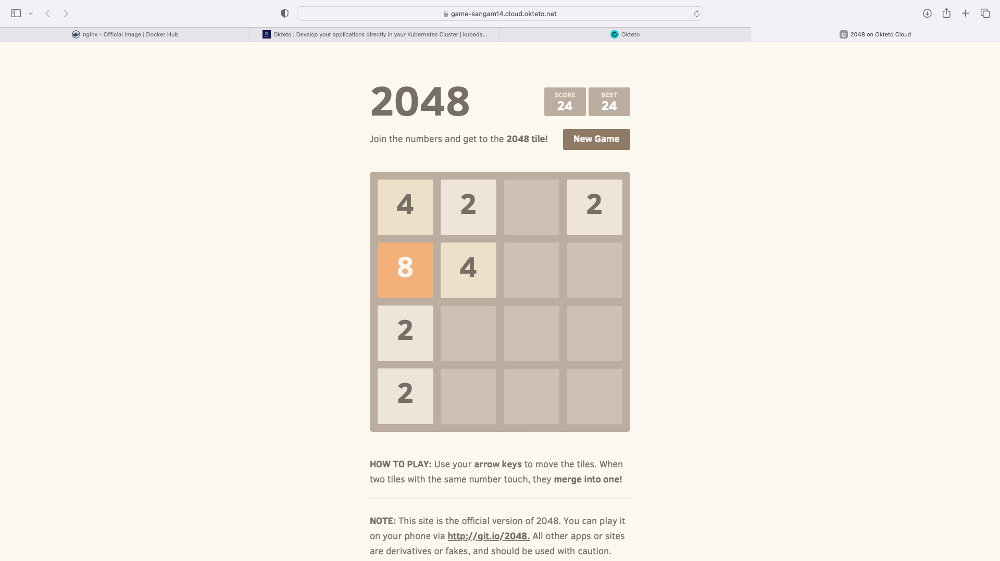
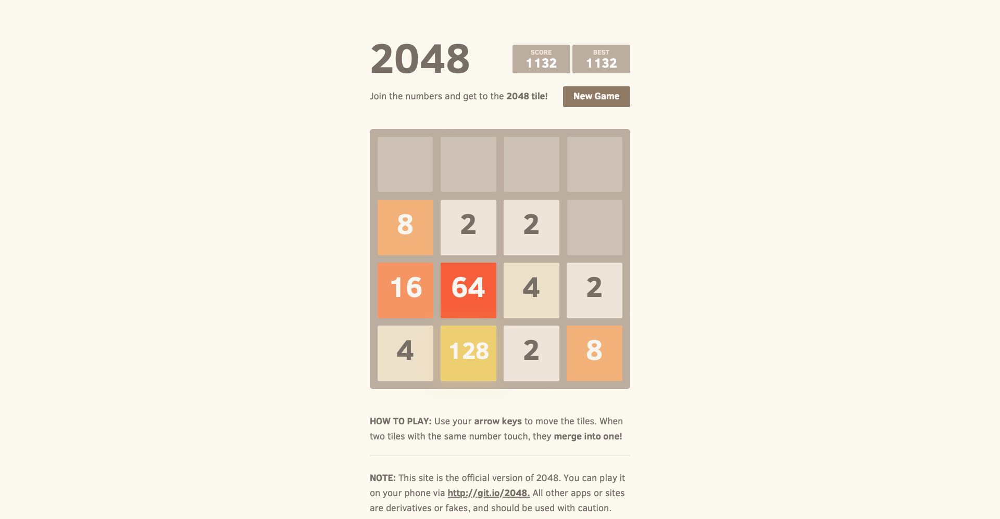

Getting started with Oketo CLI
- Macos/Linux
➜ curl https://get.okteto.com -sSfL | sh
> Using Release Channel: stable
> Using Version: 2.14.0
> Downloading https://downloads.okteto.com/cli/stable/2.14.0/okteto-Darwin-arm64
% Total % Received % Xferd Average Speed Time Time Time Current
Dload Upload Total Spent Left Speed
100 74.8M 100 74.8M 0 0 20.0M 0 0:00:03 0:00:03 --:--:-- 20.0M
Login into Okteto Cloud via Github Account

Configuring Okteto CLI with Okteto Cloud
➜ okteto context
A context defines the default cluster/namespace for any Okteto CLI command.
Select the context you want to use:
Use the arrow keys to navigate: ↓ ↑ → ←
▸ https://cloud.okteto.com (Okteto Cloud) *
docker-desktop
minikube
multinode-pod-security
Create new context
Or use directly
➜ okteto context use https://cloud.okteto.com
✓ Using sangam14 @ cloud.okteto.com
2048 folder contain source code for 2048
FROM nginx
COPY 2048 /usr/share/nginx/html
EXPOSE 80
CMD ["nginx", "-g", "daemon off;"]
services:
game:
build: ./
expose:
- 8080:80
Deploy Docker Compose on Okteto Cloud
okteto use compose-spec also its convert docker compose to kubernetes Manifest
here is more about docker compose on okteto (https://www.okteto.com/docs/reference/compose/)
okteto deploy --build
i Using sangam14 @ cloud.okteto.com as context
i Building 'Dockerfile' in tcp://buildkit.cloud.okteto.net:443...
[+] Building 7.8s (7/7) FINISHED
=> [internal] load build definition from buildkit-3366967893 0.9s
=> => transferring dockerfile: 137B 0.8s
=> [internal] load .dockerignore 0.7s
=> => transferring context: 2B 0.6s
=> [internal] load metadata for docker.io/library/nginx:latest 1.1s
=> [internal] load build context 2.5s
=> => transferring context: 603.29kB 2.5s
=> CACHED [1/2] FROM docker.io/library/nginx@sha256:2ab30d6ac53580a6db8b657abf0f68d75360ff5cc1670a85acb5bd85ba1b19 0.0s
=> => resolve docker.io/library/nginx@sha256:2ab30d6ac53580a6db8b657abf0f68d75360ff5cc1670a85acb5bd85ba1b19c0 0.0s
=> [2/2] COPY 2048 /usr/share/nginx/html 0.3s
=> exporting to image 2.5s
=> => exporting layers 0.1s
=> => exporting manifest sha256:79f1385595d70b82b4b5db52f5edddb1f4a06c79ded928926d48bb947a5322b6 0.0s
=> => exporting config sha256:ecf1dac7fbfaa6cdcb88dd2bbc616edbbc96459b078f15199fe3ddd564c481de 0.0s
=> => pushing layers 1.6s
=> => pushing manifest for registry.cloud.okteto.net/sangam14/okteto-2048-game:okteto@sha256:79f1385595d70b82b4b5d 0.8s
✓ Image 'registry.cloud.okteto.net/sangam14/okteto-2048-game:okteto' successfully pushed
✓ Kubernetes service 'game' created
✓ Endpoint 'game' created
✓ Service 'game' created
✓ Compose 'Okteto-2048' successfully deployed
✓ Development environment 'Okteto-2048' successfully deployed
i Run 'okteto up' to activate your development container
Check it out Okteto Cloud
Okteto basically use technic all

Check it out enpoints
you will see application running

lets same app using kubernetes
okteto also provide capablities to build docker images remotely its means without installing docker you can now build docker images .
➜ okteto build -t sangam14/okteto-2048-game:okteto .
i Building 'Dockerfile' in tcp://buildkit.cloud.okteto.net:443...
[+] Building 5.9s (8/8) FINISHED
=> [internal] load build definition from buildkit-3724659360 1.5s
=> => transferring dockerfile: 180B 1.5s
=> [internal] load .dockerignore 0.9s
=> => transferring context: 2B 0.8s
=> [internal] load metadata for docker.io/library/nginx:latest 0.9s
=> CACHED [1/3] FROM docker.io/library/nginx@sha256:2ab30d6ac53580a6db8b657abf0f68d75360ff5cc1670a85acb5bd85ba1b19 0.0s
=> => resolve docker.io/library/nginx@sha256:2ab30d6ac53580a6db8b657abf0f68d75360ff5cc1670a85acb5bd85ba1b19c0 0.0s
=> [internal] load build context 0.9s
=> => transferring context: 4.66kB 0.5s
=> [2/3] RUN chmod +x /usr/sbin/nginx 0.9s
=> [3/3] COPY 2048 /usr/share/nginx/html 0.3s
=> exporting to image 2.1s
=> => exporting layers 0.3s
=> => exporting manifest sha256:ad9bdd97413eddbcd25fe2d1c55992796848a314e33165235a307726dcadaf8a 0.0s
=> => exporting config sha256:2f2ffc174a087bf9653029ec247279885a59e77887a259e592761ed4b06a3959 0.0s
=> => pushing layers 1.5s
=> => pushing manifest for docker.io/sangam14/okteto-2048-game:okteto@sha256:ad9bdd97413eddbcd25fe2d1c55992796848a 0.3s
✓ Image 'sangam14/okteto-2048-game:okteto' successfully pushed
Okteto Support Kubernetes , Kustomize also Helm charts
apiVersion: apps/v1
kind: Deployment
metadata:
name: nginx-deployment
spec:
selector:
matchLabels:
app: nginx
replicas: 2
template:
metadata:
labels:
app: nginx
spec:
containers:
- name: nginx
image: docker.io/sangam14/okteto-2048-game:okteto
ports:
- containerPort: 80
---
apiVersion: v1
kind: Service
metadata:
name: nginx-service
labels:
app: nginx
spec:
type: NodePort
ports:
- port: 8080
targetPort: 80
nodePort: 8080
protocol: TCP
selector:
app: nginx
Deploy Ngnix 2048 game app
➜ Okteto-2048 git:(main) ✗ kubectl apply -f 2048.yaml
deployment.apps/nginx-deployment unchanged
service/nginx-service configured
➜ Okteto-2048 git:(main) ✗ kubectl apply -f 2048.yaml
deployment.apps/nginx-deployment configured
service/nginx-service configured
check it out endpoint
https://nginx-service-sangam14.cloud.okteto.net

Automate Inner loops
okteto manefist allow developer to execute as workflow as well as its
build:
nginx-deployment:
image: docker.io/sangam14/okteto-2048-game:okteto
context: .
deploy:
- kubectl apply -f 2048.yaml
// active developement mode on container
dev:
nginx-deployment:
command: bash
sync:
- 2048/:/usr/share/nginx/html
interface: 0.0.0.0
forward:
- 80:80
Build and Deploy Okteto App
➜ Okteto-2048 git:(main) ✗ okteto deploy --build
i Using sangam14 @ cloud.okteto.com as context
i Building 'Dockerfile' in tcp://buildkit.cloud.okteto.net:443...
[+] Building 8.0s (8/8) FINISHED
=> [internal] load .dockerignore 0.6s
=> => transferring context: 2B 0.5s
=> [internal] load build definition from buildkit-576543900 0.9s
=> => transferring dockerfile: 179B 0.8s
=> [internal] load metadata for docker.io/library/nginx:latest 1.8s
=> [1/3] FROM docker.io/library/nginx@sha256:2ab30d6ac53580a6db8b657abf0f68d75360ff5cc1670a85acb5bd85ba1b19c0 0.0s
=> => resolve docker.io/library/nginx@sha256:2ab30d6ac53580a6db8b657abf0f68d75360ff5cc1670a85acb5bd85ba1b19c0 0.0s
=> [internal] load build context 2.5s
=> => transferring context: 604.24kB 2.4s
=> CACHED [2/3] RUN chmod +x /usr/sbin/nginx 0.0s
=> [3/3] COPY 2048 /usr/share/nginx/html 0.2s
=> exporting to image 2.2s
=> => exporting layers 0.1s
=> => exporting manifest sha256:e7348f570cd90c473ff5e0707836843c092fb458809d211b8903ac2313725399 0.0s
=> => exporting config sha256:67e7d8f2c044e9aa85651fdff97f15477cf7f32372315f94ef6c1d498f408fbf 0.0s
=> => pushing layers 1.9s
=> => pushing manifest for docker.io/sangam14/okteto-2048-game:okteto@sha256:e7348f570cd90c473ff5e0707836843c092fb 0.2s
✓ Image 'docker.io/sangam14/okteto-2048-game:okteto' successfully pushed
i Running 'kubectl apply -f 2048.yaml'
deployment.apps/nginx-deployment configured
service/nginx-service configured
Build and Deploy Okteto App
➜ Okteto-2048 git:(main) ✗ okteto up nginx-deployment
i Using sangam14 @ cloud.okteto.com as context
i Images were already built. To rebuild your images run 'okteto build' or 'okteto deploy --build'
i Running 'kubectl apply -f 2048.yaml'
deployment.apps/nginx-deployment unchanged
service/nginx-service configured
i Images were already built. To rebuild your images run 'okteto build' or 'okteto deploy --build'
✓ Client certificates generated
Installing dependencies...
syncthing-macos-arm64-v1.23.1.zip 9.38 MiB / 9.38 MiB [-------------------------------------------] 100.00% 10.11 MiB p/s
✓ Dependencies successfully installed
i '.stignore' doesn't exist in folder '/Users/sangambiradar/Documents/GitHub/Okteto-2048/2048'.
i Okteto requires a '.stignore' file to ignore file patterns that help optimize the synchronization service.
? Do you want to infer defaults for the '.stignore' file? (otherwise, it will be left blank) [Y/n]: y
✓ Persistent volume successfully attached
✓ Images successfully pulled
✓ Files synchronized
Context: cloud.okteto.com
Namespace: sangam14
Name: nginx-deployment
Forward: 8080 -> 8081
root@nginx-deployment-okteto-6ff5f788c4-59wwn:/# ls
bin dev docker-entrypoint.sh home lib64 mnt proc run srv tmp var
boot docker-entrypoint.d etc lib media opt root sbin sys usr
root@nginx-deployment-okteto-6ff5f788c4-59wwn:/# cd usr/share/nginx/html
root@nginx-deployment-okteto-6ff5f788c4-59wwn:/usr/share/nginx/html# ls
CONTRIBUTING.md favicon.ico index.html js meta style
root@nginx-deployment-okteto-6ff5f788c4-59wwn:/usr/share/nginx/html# cat index.html
<!DOCTYPE html>
<html>
<head>
<meta charset="utf-8">
<title>2048 on Okteto Cloud </title>
<link href="style/main.css" rel="stylesheet" type="text/css">
<link rel="shortcut icon" href="favicon.ico">
<link rel="apple-touch-icon" href="meta/apple-touch-icon.png">
<link rel="apple-touch-startup-image" href="meta/apple-touch-startup-image-640x1096.png" media="(device-width: 320px) and (device-height: 568px) and (-webkit-device-pixel-ratio: 2)"> <!-- iPhone 5+ -->
<link rel="apple-touch-startup-image" href="meta/apple-touch-startup-image-640x920.png" media="(device-width: 320px) and (device-height: 480px) and (-webkit-device-pixel-ratio: 2)"> <!-- iPhone, retina -->
<meta name="apple-mobile-web-app-capable" content="yes">
<meta name="apple-mobile-web-app-status-bar-style" content="black">
<meta name="HandheldFriendly" content="True">
<meta name="MobileOptimized" content="320">
<meta name="viewport" content="width=device-width, target-densitydpi=160dpi, initial-scale=1.0, maximum-scale=1, user-scalable=no, minimal-ui">
</head>
<body>
<div class="container">
<div class="heading">
<h1 class="title">2048</h1>
<div class="scores-container">
<div class="score-container">0</div>
<div class="best-container">0</div>
</div>
</div>
<div class="above-game">
<p class="game-intro">Join the numbers and get to the <strong>2048 tile! </strong></p>
<a class="restart-button">New Game</a>
</div>
<div class="game-container">
<div class="game-message">
<p></p>
<div class="lower">
<a class="keep-playing-button">Keep going</a>
<a class="retry-button">Try again</a>
</div>
</div>
<div class="grid-container">
<div class="grid-row">
<div class="grid-cell"></div>
<div class="grid-cell"></div>
<div class="grid-cell"></div>
<div class="grid-cell"></div>
</div>
<div class="grid-row">
<div class="grid-cell"></div>
<div class="grid-cell"></div>
<div class="grid-cell"></div>
<div class="grid-cell"></div>
</div>
<div class="grid-row">
<div class="grid-cell"></div>
<div class="grid-cell"></div>
<div class="grid-cell"></div>
<div class="grid-cell"></div>
</div>
<div class="grid-row">
<div class="grid-cell"></div>
<div class="grid-cell"></div>
<div class="grid-cell"></div>
<div class="grid-cell"></div>
</div>
</div>
<div class="tile-container">
</div>
</div>
<p class="game-explanation">
<strong class="important">How to play:</strong> Use your <strong>arrow keys</strong> to move the tiles. When two tiles with the same number touch, they <strong>merge into one!</strong>
</p>
<hr>
<p>
<strong class="important">Note:</strong> This site is the official version of 2048. You can play it on your phone via <a href="http://git.io/2048">http://git.io/2048.</a> All other apps or sites are derivatives or fakes, and should be used with caution.
</p>
<hr>
<p>
Created by <a href="http://gabrielecirulli.com" target="_blank">Gabriele Cirulli.</a> Based on <a href="https://itunes.apple.com/us/app/1024!/id823499224" target="_blank">1024 by Veewo Studio</a> and conceptually similar to <a href="http://asherv.com/threes/" target="_blank">Threes by Asher Vollmer.</a>
</p>
</div>
<script src="js/bind_polyfill.js"></script>
<script src="js/classlist_polyfill.js"></script>
<script src="js/animframe_polyfill.js"></script>
<script src="js/keyboard_input_manager.js"></script>
<script src="js/html_actuator.js"></script>
<script src="js/grid.js"></script>
<script src="js/tile.js"></script>
<script src="js/local_storage_manager.js"></script>
<script src="js/game_manager.js"></script>
<script src="js/application.js"></script>
</body>
</html>
root@nginx-deployment-okteto-6ff5f788c4-59wwn:/usr/share/nginx/html# touch index1.html
root@nginx-deployment-okteto-6ff5f788c4-hkv5v:/usr/share/nginx/html# echo "sangam" > index1.html
root@nginx-deployment-okteto-6ff5f788c4-hkv5v:/usr/share/nginx/html# cat index1.html
sangam
you can see change on your endpoints
https://nginx-service-sangam14.cloud.okteto.net/index1.html
Github Source code for above demo :

Join CloudNativeFolks Community or Reach out to me on twitter @sangamtwts